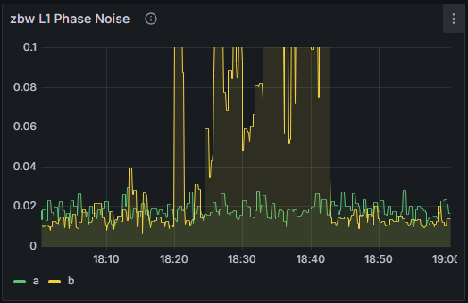
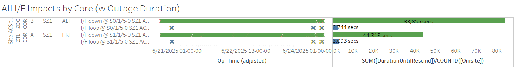
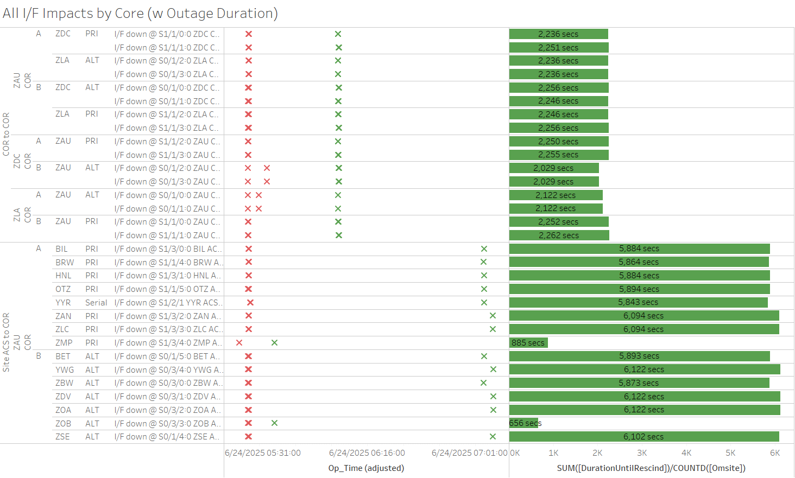

Weekly Highlights 20250618-20250625
6/18 - ZOA WRE-A Power Hit
- 6/18 06:08 - ZOA WRE-A went to No Data Reported; a few minutes later, received SE 0 No Errors from ZOA PCU-A indicating it had power cycled; restored to Normal at 6/18 06:43
6/18 - GUS Switchover-S15 to Support Non-Intrusive Maintenance
- 6/18 07:04 - GUS Switchover - S15 - CM1 to Primary / BR1 to Backup for non-intrusive maintenance to replace data collector -- ref LIR 1098164232
6/18 - ZMP WRE-C Freq Std Replaced
- 6/18 15:03 - ZMP WRE-C returns to Maintenance
after replacing Freq Std
- ZMP WRE-C - 6/16/25-6/18/25 - Freq Std failed -- ref LIR 164688221
6/19 - NOC Archive Storage Full
- 6/19 03:29 - NOC O&M SE 123 Archive Storage 100% Capacity; RMD changed at 6/20 10:05 and SEs cleared
6/19 - ZMA WRE-A Fault
- 6/19 19:12 - ZMA WRE-A Faulted with SEs 29,52,53,59; Control Powered and restored to Normal at 6/19 21:47
6/20-6/24 - WRE Bias Alarms
- 6/20 00:30 - MTP WRE-C alarmed with SE 729 WRE Bias Err for all C&Vs -- PID WRS Down
- 6/20 04:32 - MTP WRE-C to Maintenance and Restarted to address Bias Err; restored to Normal at 6/20 04:52
- 6/21 00:26 - MTP WRE-A and WRE-C alarmed with SE 729 WRE Bias Err for all C&Vs -- PID WRS Down
- 6/21 01:50 - MTP WRE-A and WRE-C to Maintenance and Restarted; restored to Normal at 6/21 02:35
- 6/21 02:33 - YYR WRE-A alarmed with SE 729 WRE Bias Err for all C&Vs
- 6/22 13:05 - YYR WRE-A to Maintenance and Restarted to address WRE Bias; restored to Normal at 6/22 13:19
6/23 - ZBW Phase Noise on WRE-A / WRE-B
- 6/23 15:04 - ZBW WRE-A and WRE-B to Maintenance
and Reset to address Phase Noise issue;
restored to Normal 6/23 15:35
-- note image below shows the effect of opening
and closing the WRE-B cabinet door
- 6/23 15:35 - ZBW L1/L2 Bias Error

6/23 - AP1 RFU M&C Comm Fault
- 6/23 21:13 - AP1 SE 1 RFU M&C Comm Fault (non-critical); GEO contract initiated troubleshooting...
- 6/23 22:13 - GUS Switchover - G30
- BR2 to Primary / Operator commanded AP1 to
Backup, but the command failed and AP1 Faulted
instead with RFU SEs related to the RFU M&C
Comm Fault -- ref LIR
1003367524
- Per GEO contract:
The AP1 GUS was placed into Maintenance and the GUS Maintainer replaced the FEP Controller module. Upon reboot, the SE1 cleared and all DCAF and M&C Workstation icons showed green (i.e. normal). - Control Powered and restored to Backup at 6/23 23:02
- Per GEO contract:
6/24 - S15 Uncommanded Switchover / CM1 L1 Loss Message
- 6/24 20:54 - GUS Switchover - S15
- BR1 to Primary / CM1 to Backup;
Uncommanded CV Source chg for CMA GUS. CMA GUS then auto switched to BACKUP-- ref LIR 1004307824; GEO Selected CV Source changed to Unknown then to ZTL; may be related to flapping comms... Status logs show multipleL1 Loss Messagejust before switch to Backup. - 6/25 13:46 - GEO S15 Selected CV Source Change from ZTL->ZLA
6/24 - POC OAC-A Overtemp
- 6/24 22:10 - POC OAC-A alarmed with overtemp; office having HVAC issues -- ref LIR 1004010024
- 6/25 08:03 - POC OAC-A alarmed with overtemp -
ESU has setup a portable AC unit while they T/S HVAC
Various Comm Impacts
* Only captures major / long-term comm outages
CM1 Comms
- 6/18 16:04 - CM1 Ring 2 PRI comms flapping; last event cleared at 6/18 23:54 (~2440 seconds total)
- 6/19 18:08 - CM1 Ring 2 PRI comms flapping; last event cleared at 6/19 20:42 (~258 seconds total)
- 6/20 17:35 - CM1 Ring 2 PRI comms flapping; last event cleared at 6/20 22:15 (~427 seconds total)
- 6/23 16:20 - CM1 Ring 2 PRI comms flapping; last events cleared at 6/23 23:05 (~907 seconds total)
- 6/24 15:51 - CM1 Ring 2 PRI comms flapping; last event cleared at 6/24 23:14 (~1521 seconds total)
OTZ Comms
- 6/18 23:52 - OTZ Ring 1 PRI / Ring 2 ALT comms down hard; both lines cleared at 6/18 23:54 (~83 seconds)
- 6/19 23:52 - OTZ Ring 1 PRI / Ring 2 ALT comms down hard; both lines cleared at 6/19 23:53 (~84 seconds)
- 6/20 15:59 - OTZ Ring 1 ALT / Ring 2 PRI comms flapping; last events cleared at 6/20 19:49 (~4616 seconds total)
- 6/21 16:37 - OTZ Ring 1 ALT / Ring 2 PRI comms flapping; last events cleared at 6/21 19:30 (~3707 seconds total)
- 6/22 17:52 - OTZ Ring 1 ALT / Ring 2 PRI comms flapping; last events cleared at 6/22 18:44 (~777 seconds total)
- 6/23 19:30 - OTZ Ring 1 PRI / Ring 2 ALT comms down hard; both lines cleared at 6/23 20:01 (~1839 seconds)
ZME Comms
- 6/18 10:10 - ZME Ring 1 ALT / Ring 2 PRI comms down hard; both lines cleared at 6/18 10:13 (~177 seconds)
- 6/18 14:43 - ZME Ring 1 ALT / Ring 2 PRI comms flapping; last events cleared at 6/18 22:11 (~469 seconds total)
Other Sites
- 6/18 07:29 - MSD Ring 1 Eth comms down hard; line cleared at 6/18 07:39 (~9m 55s)
- 6/19 20:12 - YYR Ring 1 comms flapping; last event cleared at 6/19 20:22 (~158 seconds total)
- 6/20 18:11 - ZSU Ring 1 ALT / Ring 2 ALT and ZMA Ring 1 PRI / Ring 2 ALT comms down hard; all lines cleared at 6/20 18:59 (~2879 seconds)
- 6/20 18:12 - SZ1 Ring 1 PRI / Ring 2 ALT comms flapping; last events cleared at 6/24 03:54 (~83855 seconds total)

- 6/20 22:29 - BET Ring 1 ALT / Ring 2 PRI comms flapping; last events cleared at 6/20 22:36 (~230 seconds total)
- 6/24 05:26 - Comm event at ZAU affecting both
Rings;
MR-206293 - Transition from C15454 to FW9500-- ref LIR 998335024- COR-COR circuits restored at 6/24 06:03 (~2259 seconds)
- Remaining circuits restored at 6/24 07:04 (~5843 seconds)
- 6/24 05:26 - BRW / OTZ L1/L2 Bias Error

- 6/24 16:56 - DX1 Ring 1 PRI / Ring 2 ALT comms down hard; both lines cleared at 6/24 17:36 (~2388 seconds)
- 6/24 20:44 - YFB Ring 1 + YYR Ring 1 comms down hard; both lines cleared at 6/24 23:45 (~10812 seconds)
- 6/25 06:41 - BRW/BET/OTZ Ring 1 PRI / Ring 2 ALT comms down hard; all lines cleared at 6/25 07:24 (~2569 seconds)
- 6/25 06:45 - YYR Ring 1 comms flapping; last event cleared at 6/25 07:12 (~355 seconds total)
- 6/25 08:20 - BRW/BET/OTZ Ring 1 PRI / Ring 2 ALT comms down hard; all lines cleared at 6/25 09:30 (~4207 seconds)
- 6/25 09:09 - BR1 Ring 1 ALT / Ring 2 PRI + BR2 Ring 1 ALT / Ring 2 PRI comms down hard... Both Brewsters currently Primary...
Mexico Ring 2 Down Hard...
- Targeting network upgrade in CY26
YFB Ring 2 Down Hard...
YFB requires satcom upgrades by NavCanada to restore... ref LIR 892056924
- 11/6/24 18:48 - YFB Ring 2 down hard... both rings to YFB down hard...
List of current offline WREs
List of current offline WREs -- ref WAAS Status Monitor
All Depot shipments to Mexico are halted until the customs process can be finalized
- MMD WRE-A - 3/31/25-... - Freq Std failed -- ref LIR 953873324
- MTP WRE-B - 11/18/24-... - Receiver inits failing -- ref LIR 898330924
- MMX WRE-A - 10/13/24-... - Freq Std failed -- ref LAD 879853824
- MMX WRE-C - 5/15/24-... - Processor failed and could not be restored -- ref LIR 798352224
- MPR WRE-B - 5/3/24-... - Inits failing -- looks like a bad freq std; due to shipping issues, there is no spare Freq Std and no ETA to recover WRE-B... -- ref LIR 44170821
5/11/23-... - MX Ring 2 Satcom Upgrade
- 5/11/23 17:01 - MX Ring 2 SatCom upgrade begins; MX Ring 2 OFFLINE until upgrade troubleshooting is complete
All sites are currently connected through Tijuana with new cables; but still large UDP data packets (WAAS Multicast) being dropped on Ring 2 -- no further actions to take at Tijuana
- All MX Ring 2 currently down with no ETA...
-
WAAS Second Level assessing situation before further troubleshooting...

Major Events


Core I/F Status

Comm Events

Mexico Comm Status